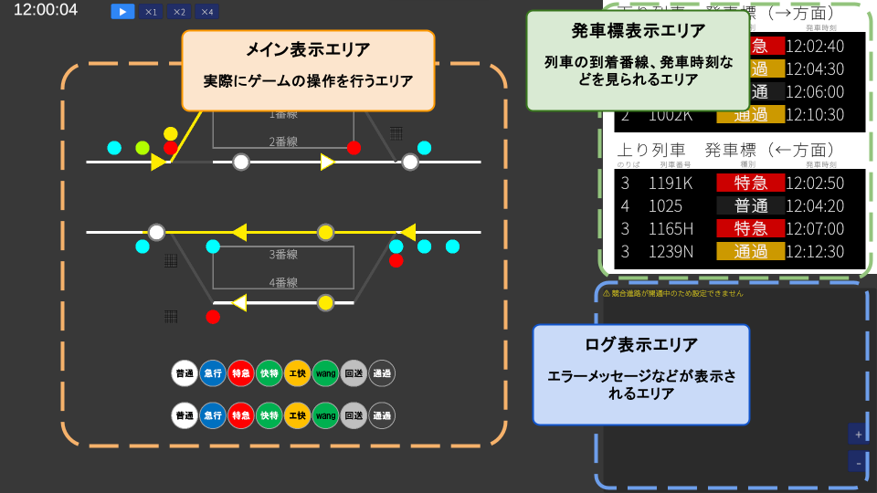
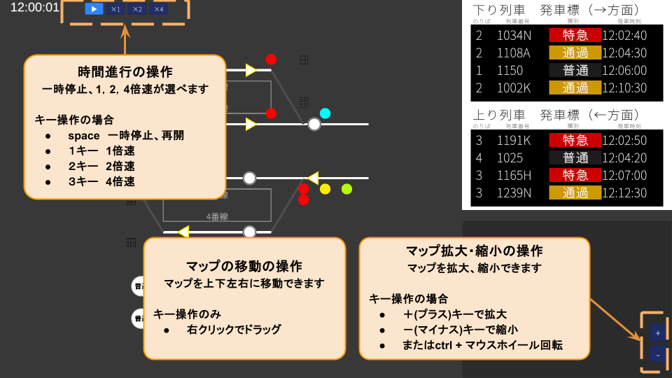
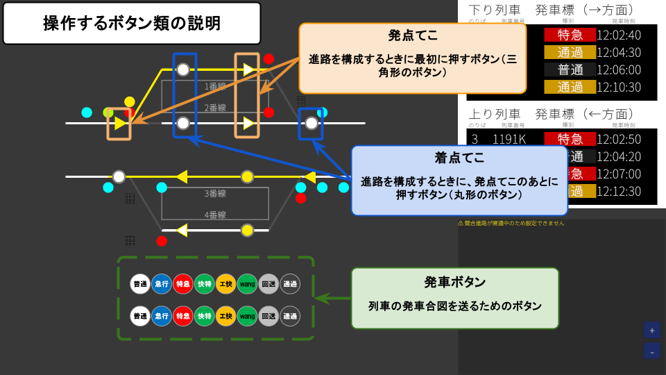
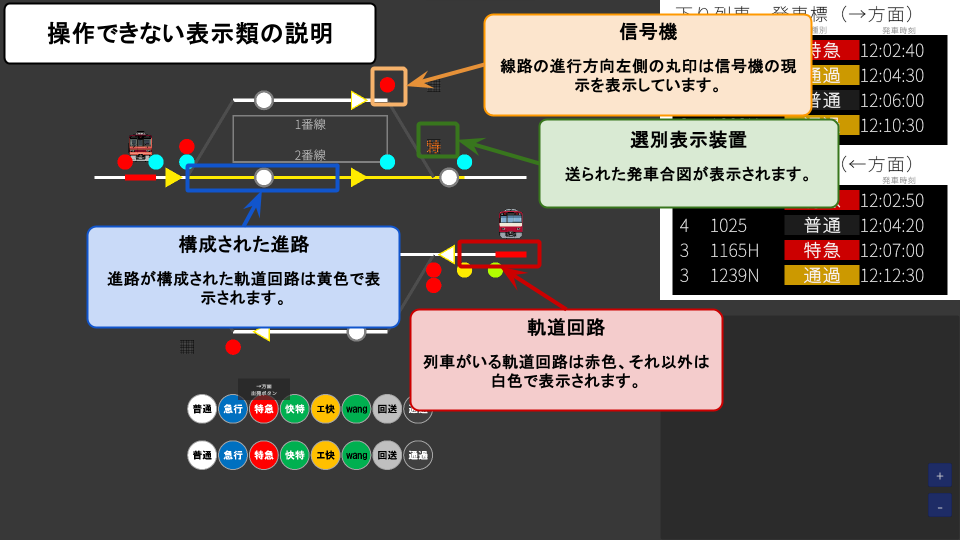
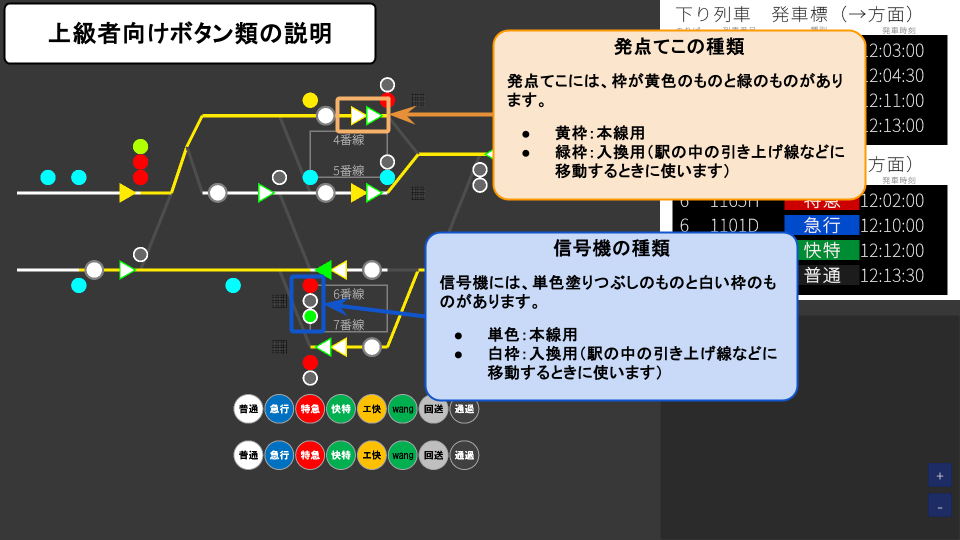

🎯 ゲームの目的
あなたは駅の信号扱い係です。
ホームに来た列車が安全に発車できるよう、進路を開通させ、出発の合図を送るのがあなたの仕事です。
🖥 画面の見かた

- メイン表示エリア — 実際にゲームの操作を行うエリアです
- 発車標エリア（右上） — 列車の発車順序・種別・発車時刻が表示されます
- ログ表示エリア（左下） — エラーメッセージなどが表示されます
🗺 マップ操作

マップの移動
マップを上下左右に移動できます。
- 右クリック + ドラッグ で移動
マップの拡大・縮小
マップを拡大、縮小できます。
- +（プラス）キーで拡大
- -（マイナス）キーで縮小
- または Ctrl + マウスホイール回転
⏱ 時間進行の操作
一時停止、1倍速・2倍速・4倍速が選べます。画面左上のボタン、またはキーボードで操作できます。
- Space — 一時停止 / 再開
- 1 キー — 1倍速
- 2 キー — 2倍速
- 3 キー — 4倍速
📋 基本の流れ
🎮 画面上のアイコン
マップ上のアイコンには、操作できるものと表示のみのものがあります。
操作できるアイコン

- 発点てこ（▶） — クリックして点灯させます。進路の始点を指定します
- 着点てこ（○） — 発点てこが点灯中にクリックすると、進路の開通を試みます
- 出発ボタン — 列車を発車させるボタンです。進路が開通している状態でクリックします
表示のみ（操作できないもの）

- 信号機 — 進路の状態に応じて自動的に現示が変わります
- 選別表示装置 — 出発ボタンを押すと、発車する列車の種別が表示されます
- 軌道回路（黄色の線） — 進路が開通した区間を示します
- 軌道回路（赤色の線） — その区間に列車がいることを示します
① てこを操作する
マップ上にある▶（矢印）アイコンがてこです。
てこには発点（はつてん）と着点（ちゃくてん）の2種類があります。
到着させる番線を確認する
まず、列車のアイコンにカーソルを合わせると列車番号が表示されます。 その列車番号を画面右上の発車標で確認し、何番線（のりば）に到着させるべきかを把握しましょう。 確認できたら、その番線に到着できる進路を開通させます。
操作手順
- 発点てこをクリック → 点灯（選択状態になる）
- 着点てこをクリック → 進路の開通を試みる
進路（しんろ）とは？
進路とは、列車が安全に通るために確保された出発地点から目的地点までの一本の道筋のことです。 進路が「開通」すると、その経路上のポイント（分岐器）が正しい方向にセットされ、他の列車が入れないようにロックされます。
進路が開通できる状態であれば、ポイント（分岐器）が自動的に切り替わり、信号が進行を示す表示に変わります。
② 出発ボタンを押す
ホームに出発ボタンがあります。カーソルを合わせると方向（→方面 / ←方面）が表示されます。
- 進路が開通している状態でクリック → 発車音が鳴り、列車が動き出す
- 進路が開通していない状態でクリック → 何も起きません（実物と同じです）
出発ボタンを押すと、ホーム上の選別装置（種別表示器）に列車の種別（快特・特急・急行・普通など）が表示されます。
③ てこを戻す（進路を解除する）
列車が発車したら、発点てこをクリックして進路を解除します。
ただし、以下の場合はすぐに解除できません。
接近鎖錠（せっきんさじょう）
列車が進路に接近中のときは、てこを戻すことができません。列車が停車した後、30秒が経過すると自動的に解錠されます。画面左のログに残り秒数が表示されます。
在線鎖錠（ざいせんさじょう）
列車が進路内の線路に在線中（乗っている状態）は、その区間は他の進路に使えません。列車が通過し終わると自動で解錠されます。
💡 知っておくと便利なこと
競合進路
交差したり重なったりする進路は同時に開通できません。先に開通している進路がある場合、ログにその旨が表示されます。
列車情報の確認
マップ上の列車にカーソルを合わせると、種別と列車番号が表示されます。
時刻表の確認
画面右側の時刻表で、各ホームの発着列車を確認できます。
ログパネル
画面左側に操作の結果や警告が表示されます。⚠ マークが出たときは内容を確認しましょう。
🔧 てこの種類

てこには本線用と入換用の2種類があります。選択時の色で区別できます。
| 種類 | 選択時の色 | 用途 |
|---|---|---|
| 本線用発点てこ | 黄色 | 旅客列車の本線進路を開通させる |
| 入換用発点てこ | 緑色 | 構内での入換進路（車両の移動）を開通させる |
🚦 信号機の種類
マップ上には4種類の信号機があります。
| 種類 | 役割 |
|---|---|
| 場内信号機 | 駅の構内への進入を制御する |
| 出発信号機 | 駅からの出発を制御する |
| 閉塞信号機 | 駅間の区間（閉塞）への進入を制御する |
| 入換信号機 | 構内での入換移動を制御する。本線の信号機とは別系統で動作する |
🔴 信号の現示（表示の意味）
信号機は進路の状態と前方の混み具合に応じて自動的に現示が変わります。
| 現示 | 意味 |
|---|---|
| 🔴 停止（赤） | 進入禁止。列車はここで止まる |
| 🟡🟡 警戒 | 非常にゆっくり進む。すぐ先に列車がいる可能性 |
| 🟡 注意 | ゆっくり進む。次の信号で止まれる速度で |
| 🟡🟢 減速 | 速度を落として進む |
| 🔵 進行（水色） | 進入可能。前方は安全 |
🔒 鎖錠の仕組みをもっと詳しく
接近鎖錠
列車が進路に向かって走行中に発動します。「今てこを戻したら列車が行き先を失う」状態を防ぐための安全装置です。列車が停車後、30秒のカウントが経過すると自動的に解錠されます。
在線鎖錠
列車が進路内の線路に乗っている間、その区間は鎖錠されます。列車が通り抜けると自動で解錠されます。
区分鎖錠
進路解除後も、まだ列車が通過し終わっていない軌道回路は個別に鎖錠が残ります。これにより、前の列車が完全に抜けるまで後続の進路を開通できないようになっています。
🔄 折り返し列車
終着駅に到着した列車が、同じ駅から反対方向に発車する「折り返し」があります。 折り返し列車には進行方向が逆になる出発進路を設定する必要があります。 時刻表の矢印方向をよく確認してから進路を設定しましょう。
❓ よくある質問
- ベルが鳴って表示もされている場合 — 列車がまだ完全に停車していない、またはドアの開閉中など、発車できる状態になっていないタイミングで押した可能性があります。少し待ってからもう一度出発ボタンを押してみてください。
- ベルも鳴らず表示もされていない場合 — ログに「進路が開通していません」などのメッセージが出ていないか確認してください。正しく進路を開通させてから、もう一度出発ボタンを押してみてください。